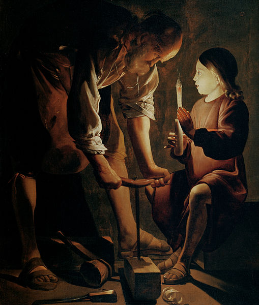
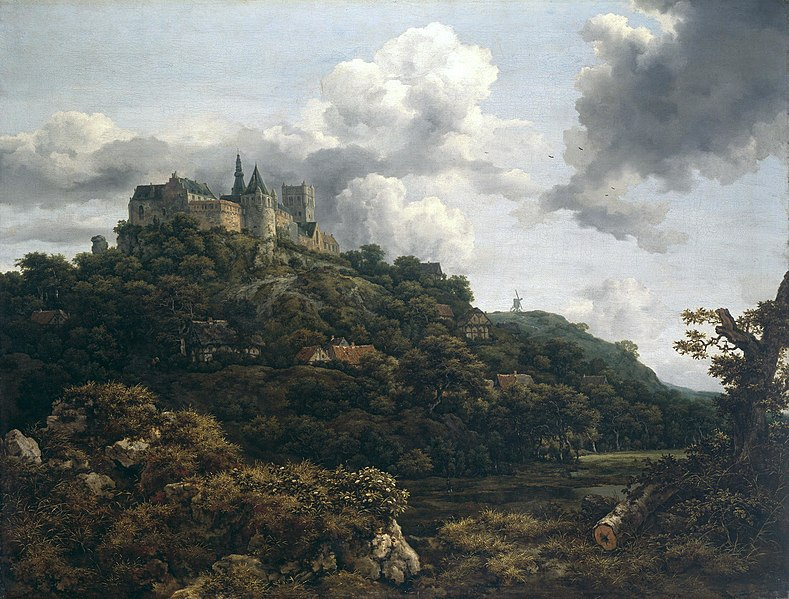

| 🎨 All About Baroque Painting | |||||
| 🏠 Home | 💭About | 📷 Gallery | 📽 Video | 🎧 Audio | 📞 Contact |
History:The Council of Trent (1545–63), in which the Roman Catholic Church answered many questions of internal reform raised by both Protestants and by those who had remained inside the Catholic Church, addressed the representational arts in a short and somewhat oblique passage in its decrees. This was subsequently interpreted and expounded by a number of clerical authors like Molanus, who demanded that paintings and sculptures in church contexts should depict their subjects clearly and powerfully, and with decorum, without the stylistic airs of Mannerism. This return toward a populist conception of the function of ecclesiastical art is seen by many art historians as driving the innovations of Caravaggio and the Carracci brothers, all of whom were working (and competing for commissions) in Rome around 1600, although unlike the Carracci, Caravaggio persistently was criticised for lack of decorum in his work. However, although religious painting, history painting, allegories, and portraits were still considered the most noble subjects, landscape, still life, and genre scenes were also becoming more common in Catholic countries, and were the main genres in Protestant ones.  National variations:
Led by Italy, Mediterranean countries, slowly followed by most of the Holy Roman Empire in Germany and Central Europe, generally adopted a full-blooded Baroque approach.A rather different art developed out of northern realist traditions in 17th century Dutch Golden Age painting, which had very little religious art, and little history painting, instead playing a crucial part in developing secular genres such as still life, genre paintings of everyday scenes, and landscape painting. While the Baroque nature of Rembrandt's art is clear, the label is less used for Vermeer and many other Dutch artists. Most Dutch art lacks the idealization and love of splendour typical of much Baroque work, including the neighbouring Flemish Baroque painting which shared a part in Dutch trends, while also continuing to produce the traditional categories in a more clearly Baroque style.n France a dignified and graceful classicism gave a distinctive flavour to Baroque painting, where the later 17th century is also regarded as a golden age for painting. Two of the most important artists, Nicolas Poussin and Claude Lorrain, remained based in Rome, where their work, almost all in easel paintings, was much appreciated by Italian as well as French patrons.
 |
|||||
| design by MahrooShirkhodaie © 2022 | |||||